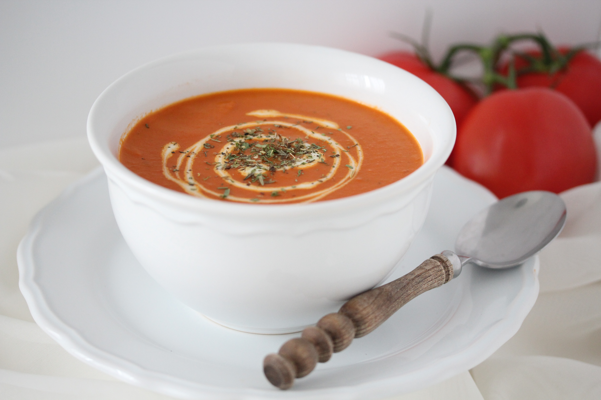

Tomatensoep
Een simpel recept voor tomatensoep. Kan gebruikt worden als voorgerecht of als diner zelf.
Ingrediënten
- 1 gele ui
- 1 sjalot
- 2 eetlepels tomatenpuree
- 1 theelepel knoflookpoeder
- 2 blikken gepelde tomaten
- 1 gevulde blik water
- 1 eetlepel kristalsuiker
- 1 eetlepel Provençaalse kruiden
- 250 ml kookroom
- 1 theelepel zout
- 1/2 theelepel zwarte peper
- zonnebloemolie
Bereidingswijze
- Pel en snijd de ui en sjalot in kleine blokjes. Giet een scheutje zonnebloemolie in een soeppan en bak de uien voor een paar minuten mooi lichtbruin.
- Voeg de tomatenpuree toe bij de uien en bak even kort mee. Strooi de knoflookpoeder erbij, roer samen en laat het geheel voor nog eens 5 minuten bakken. Dit doe je op een middelmatig vuurtje, zodat de uien niet aanbranden.
- Voeg de inhoud van de twee blikken gepelde tomaten toe in de pan en roer geheel samen. Vul vervolgens een blik met water en giet dit in de pan bij de tomaten.
- Voeg de kristalsuiker samen met de Provençaalse kruiden toe en roer geheel samen. Laat de tomatensoep koken op een middelmatig vuurtje voor ongeveer 15 minuten.
- Haal vervolgens de pan van het vuur en pureer met behulp van een staafmixer(of in een blender) de tomatensoep goed glad. Je kunt er ook voor kiezen om de soep iets korter te pureren als je wat stukjes in de soep wilt.
- Zet de pan weer terug op het vuur en giet de kookroom erbij. Roer geheel samen, zet het vuur wat lager en laat de soep nog even zachtjes door pruttelen.
- Serveer de tomatensoep met wat extra Provençaalse kruiden of met wat verse basilicum.

Tip Je kan ook nog warm brood erbij serveren om in de soep te dopen.